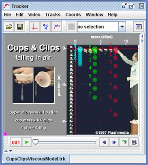

Here the motions of three cups are compared with a particle model that assumes a viscous air resistance force (depends linearly on v). The equation and parameters are identical for all three cups--only the cup masses differ (there are slight variations in initial velocity due to release times).
The model fits the mass 4 cup reasonably well. What about the mass 1 and mass 8 cups?
